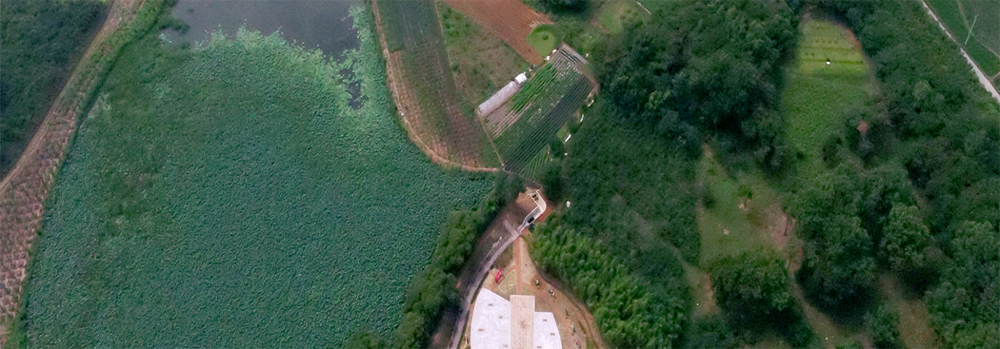
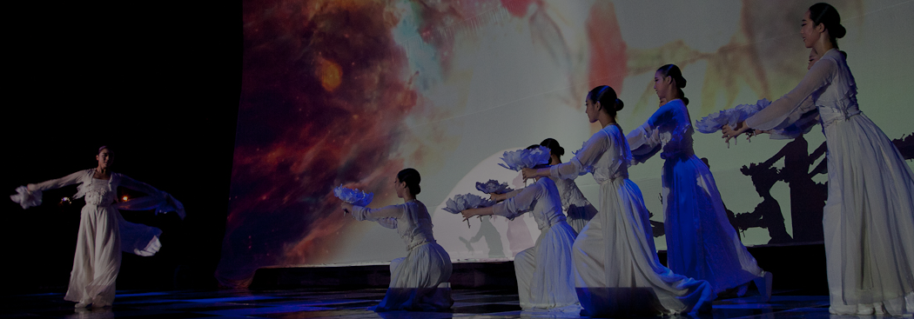
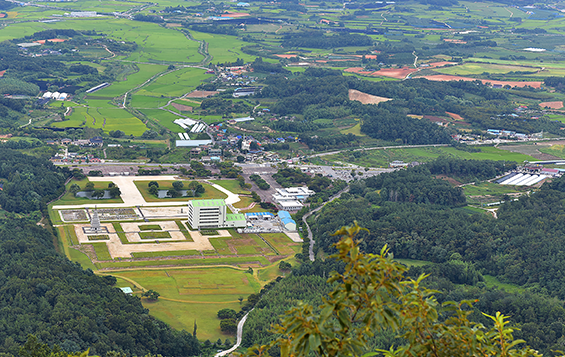
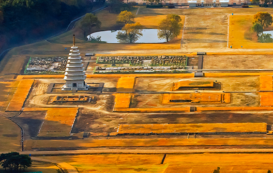
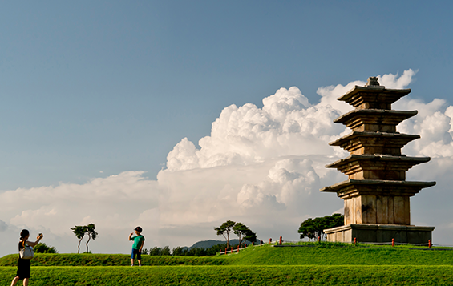
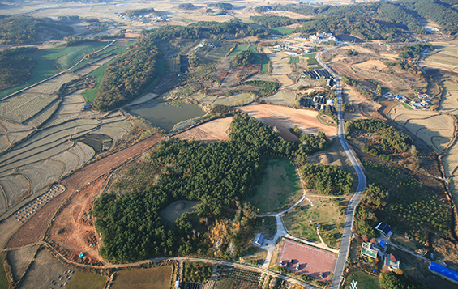
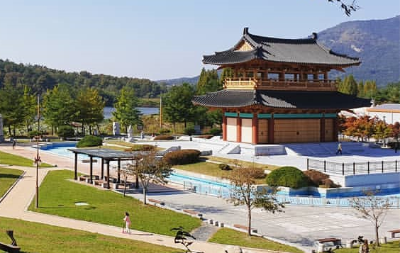
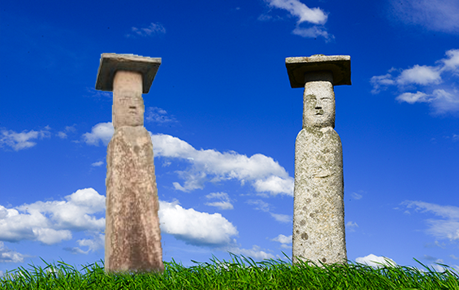

Amazing 익산
행복한 품격도시 익산시
Festival
"백제의 숨결천년의사랑"
세계를 품은 백제왕도 익산! 서동과 선화의 국경을 초월한 사랑이 있는 백제역사유적지구 익산으로 여러분을 초대합니다.
소개
-
서동의 탄생과 성장
마룡지-용의 아들 탄생
익산시 연동마을, 백제남쪽의 연못, 용이 살고 있었다고 전하며 인근에 서동생가 터가 있다. 한여름이면 조그마한 방죽 (마룡지) 안에는 연꽃이 피어 있다. 간간히 보이는 그 분홍빛 꽃봉우리와 푸른 연잎은 햇빛과 이제는 친구인 냥 보인다. 신비에 싸인 탄생설화만큼 이곳의 비밀은 다 밝혀지고 있지는 않지만 서동의 생가터라는 간판이 이곳의 역사를 말해주고 있다.
서동생가 터
삼국유사에 의하면 백제수도 연못가에 용이 살고 있었으며 그 인근의 과부와 정을 통하여 출생하였다. 전하는 즉, 서동 백제무왕의 생가 터가 있다. 익산서동축제는 1969년 마한민속제전으로 시작했으며, 국경(백제,신라)을 초월한 서동과 선화공주의 세계적인 사랑과 서동요의 본고장임을 알리기 위해 2004년부터 서동축제로 진행되어 오고 있습니다
오금(五金)산 (익산토성 또는 오금산성)
서동마와 황금의 산 연동마을 뒷산은 오금산이라 불린다. 서동은 연동마을에서 태어나 이곳에 집을 짓고 오금산에서 마를 캐어 장에 내다 팔아 어머니와 함께 살고 있었다. 마는 최근에 건강음식으로 밥으로 떡으로 식혜 등 각종 음식으로 현대인의 건강을 지켜주고 있다. 서동은 이미 알고 있었을까 하는 재미난 의구심도 가져본다. 삼국사기에 서동은 지략이 뛰어나고 용모가 단정하였다고 전하는데 지금의 꽃남이라 단정 지어 보고 웃어본다. 후에 서동은 선화공주와 이곳에서 5덩어리의 금덩어리를 얻었으며 그래서 이 산을 오금산이라고 한다 전한다. 서동은 왕으로 등극하여 어머니를 위해 절을 지었는데 바로 오금사(지)이며, 백제의 군력을 강화하기 위해 익산토성(오금산성)을 쌓았다. 오금산 오솔길을 따라 걸어보면 백제미륵사로 이어진다.
-
서동의 사랑
아름다운 공주님 선화공주님, 서동이와 노닐다가 궁궐로 돌아가네...
익산시 연동마을, 백제남쪽의 연못, 용이 살고 있었다고 전하며 인근에 서동생가 터가 있다.

현존하는 가장 오래된 4구체 향가 서동은 곧장 마를 가지고 경주 땅에 가 아이들에게 마를 나누어 주며 노래를 부르게 한다.결국 그 노래는 신라 궁 진평왕과 왕비의 귀에 까지 들어가 선화공주는 궁궐에서 쫓겨나게 되었다. 이때 서동은 궁궐 밖에서 기다려 선화공주를 모시고 익산으로 내려온다. 아름다운 공주는 마음씨도 착해서 어머니로부터 받은 순금을 보여주며 시장에 내다 팔아 생활하고자 한다. 서동은 이에 깜짝 놀라 마를 캐던 오금산에 이러한 것이 얼마든지 많이 있다는 사실을 선화공주에게 말해준다. 이 둘은 곧 오금산에 가 커다란 순금5덩어리를 얻게 되었다. 서동은 이 금을 신라 진평왕에게 보내기 위하여 미륵산 사자사에 계신 지명법사께 상의하여 신통력을 이용하여 눈 깜짝 할 사이에 금과 함께 편지를 신라 궁으로 보내 후에 큰 인심을 얻었다 한다.진평왕은 당연히 황금을 보고 기뻐하였으며 같이 보내온 서동의 편지에도 큰 감동을 받았으리라 감히 미루어 짐작해 본다.오늘 부모님께 편지 한 장 써 보면 어떨까한다.
삼국유사에 의하면 백제수도 연못가에 용이 살고 있었으며 그 인근의 과부와 정을 통하여 출생하였다. 전하는 즉, 서동 백제무왕의 생가 터가 있다. 지금도 1400여년을 이어오고 있는 아름다운 사랑의 노래가 익산에서 불려지고 있다. 매년 가을 서동축제에서 그 노랫소리가 더 크게 들려온다.
-
무왕의 영광과 꿈
백제는 다시 그 문화를 익산에서 꽃피운다.
동양 최대의 사찰 미륵사. 그 곳에는 백제무왕의 꿈이 고스란히 느껴진다. 백성들의 가장 아픈 마음을 생각하고 이상세계를 펼치고자 하였던 그의 커다란 꿈 이야기는 삼국유사의 미륵사 창건연기설화에서 찾아볼 수 있다.
무왕과 왕비가 미륵산 사자사에 계신 지명법사님을 찾아가던 중 바로 미륵산 아래 연못에서 미륵삼존이 출현한다. 이에 왕비는 절을 짓기를 청하자 무왕은 지명법사와 상의하여 인근의 산을 허물어 뜨려 못을 메우고 절을 지었다 한다. 바로 미륵사다. 미륵부처님, 바로 미래의 부처님 3분을 모셨다. 미륵부처는 미래의 부처님이시다. 3번의 설법을 통하여 모든 중생(사람들)을 구제해 주시는 부처님이시다. 바로 무왕은 전쟁에서 지치고 삶의 어려움의 고통에서 모든 사람들에게 이상세계를 현실화 하고자 하였던 것이다. 또한 무왕은 다시 한번 백제를 강건하게 하고 자 하였다. 새로운 정신적 토대를 통하여 왕권을 강화하고자 이 거대한 국립사찰을 지었다. 그리고 최초의 석탑을 만드셨다. 국보 제11호 미륵사지 석탑. 무왕은 단순히 꿈과 이상만을 이곳에 담아 놓지 않고 미래의 희망도 담아 놓으셨다. 올해 1월14일 미륵사지석탑 가장 중심부 심주석에서 부처님의 진신사리를 비롯한 사리장엄 683점이 세상에 드러났다. 현재의 희망의 빛으로... 가벼운 빗소리에도 미륵산은 연무를 두른다. 부끄러운 새색시인양 눈 오는 날은 그 드넓은 사지가 포근하다. 어머니 품처럼...
왕이 되고 싶다면 이곳으로 - 백제왕궁리유적
국내에서 유일하게 발굴조사가 진행 중인 그것도 올해로 20년이 넘어가는 왕궁 유적이 바로 익산의 백제왕궁리유적이다.
지금은 왕궁리5층석탑과 발굴현장이 우리를 제일 먼저 반겨준다. 탑의 유려한 선은 가느다라면서도 끊임없이 하늘을 향하고 있다. 힘이 느껴진다. 국보289호 왕궁리5층석탑 이 안에 또 다른 국보 123호 금제금강경판과 사리장엄구가 있었다. 관세음응험기에 의하면 백제무왕은 익산으로 천도를 단행하여 정사를 운영하였다 한다. 그래서인지 이곳에는 수부명기와를 비롯한 금제품들이 다수 출토되었다. 수부 즉 임금님의 집이라는 뜻이다. 금제품의 섬세함에 백제인의 금속기술에 익산이 보석의 도시임을 다시금 실감케 한다.무왕은 왜 익산으로 천도를 단행하려 했을까? - 백제왕궁리유적
무왕의 생가가 있는 익산은 군사적, 지리적으로 우수할 뿐 만 아니라 풍부한 경제력을 갖추고 있었다.
백제의 또 다른 번성에 대한 꿈의 결정체가 바로 이곳 백제왕궁리 유적이다. 하지만 안타깝게도 탑이 말해주듯 무왕의 왕궁은 그 운명을 다하고 다시 사찰로 변모한다. 이곳에서 1.3 km 떨어진 곳에 왕실관련사찰 제석사(지)가 있다. 우리나라의 유일하게 발굴현장을 공개하는 왕궁에 4월의 왕 벚꽃들이 아름답다. -
무왕의 영광과 꿈
익산쌍릉 - (사적 제87호 석왕동 산, 55,56번지)
백제의 무왕과 왕비인 선화공주가 잠들어 있는 곳이다. 왕릉이 두기가 있어 쌍릉이라 불렸는데 최근에는 무왕릉 이라 부른다. 왕릉은 오금산을 뒤로 하고 남북으로 약 150m를 떨어져 마주보고 있다. 북쪽에 있는 큰 능이 바로 무왕릉. 남쪽에 있는 능이 선화공주인 무왕비의 능
서동공원 - (금마면 동고도리 526)
금마저수지를 끼고 있는 시원한 조각공원인 서동공원은 한여름을 가로지르는 자전거하이킹과 산책을 즐길 수 있으며, 선화공주와 서동왕자의 조각상과 ‘서동요’ 조각을 비롯한 98점의 조각들을 만날 볼 수 있다. 중앙광장에는 무왕 동상이 위치하고 있고, 십이지신상 조각을 보며 그 의미 또한 새기며 사진을 찍어 볼 수 있어 한층 재미가 있다. 봄에는 철쭉이 환영하며, 여름에는 금마저수지가 물결이 푸르다. 가족소풍이나 단체 소풍 코스로도 좋다. 최근에 개관한 마한관에는 유물과 체험방이 있어 아이들과 나들이하기 안성맞춤이다. 또한 전시관 뒤편으로 이어지는 용화산 등산도 좋다.
동고도리&서고도리
익산의견우와직녀사랑사랑 누가 말했나? 향기로운 꽃보다 진하다고...
고려시대 석불이 200m를 사이에 두고 남자와 여자로 서 있다. 이 사이에는 옥룡천이 흐르고 있어 마냥 두 남녀는 바라보고 있어야 했다. 지금은 다리가 있어 우리 몰래 서로를 만나는지도 모르겠다. 하지만 고려시대 당시에는 다리가 없었나보다.

고려시대의 그의 사랑을 살짝 엿보자. 두 석불은 서로 사랑을 하였다. 하지만 천(옥룡천)이 흐르고 있어 서로 만날 수 없어 항상 그들은 슬펐다. 그들은 일년에 단 한번 가장 추운 음력 섣달 그믐날 천이 꽁꽁 얼어붙는 날, 서로 만나 사랑을 하고 새벽닭이 울면 서로 다시 제자리로 돌아간다고 한다. 바쁜 걸음일수록 그들의 얼굴을 자세히 살펴보니 한 분의 석불(부처님) 얼굴에 수염이 있다. 그리고 입 꼬리를 살짝만 올려 웃고 있다. 눈은 가늘게 뜨고 말이다. 한참 바로 보면 나도 몰래 같이 웃고 있다. 서로 만날 수는 없지만 그 지긋한 마음이 느껴진다. 또 다른 한 분은 얼굴이 깨끗하다. 여자다. 수염이 없다. 한 석불은 동고도리, 또 다른 석불은 서고도리에 위치하고 있다. 두기의 석불은 고려시대의 석불로서 풍수지리적으로 세웠다는 설과 함께 지금껏 이룰 수 없는 사랑을 말없이 바라만 보고 있다. 보물 46호이다. -
전시 주요내용
프로그램명 내용 비고 백제의 빛 익산만의 백제 이야기를 담은 백제 유등 전시 연출 해상왕국의 빛 해상왕국 백제의 이야기를 담은 수상 유등 전시 연출 서동 별빛정원 서동공원 LED 경관 조성을 통한 로맨틱 공원 분위기 조성 한지등 산책로 금마 주민들의 주도로 진행되는 한지등 전시 산책로 서동 깃발전 서동과 서동요, 백제 이야기 그림 깃발 전시 관람객 유의사항
- 코로나19 확산 방지를 위해 방역수칙 철저히 지키기 ▶ 마스크 반드시 착용, 사회적거리유지 등
- 야간 관람시간 (오후 5시부터 ~ 9시까지) 지키기
- 안전한 관람과 설치물 파손 및 훼손방지 위해 일정거리 유지 관람
정보관리 담당부서: 문화관광산업과 전화번호: 063-859-5778 최종수정일: 2020-01-16